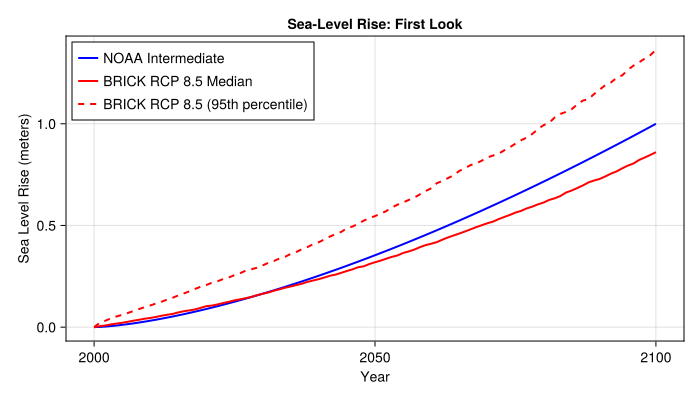
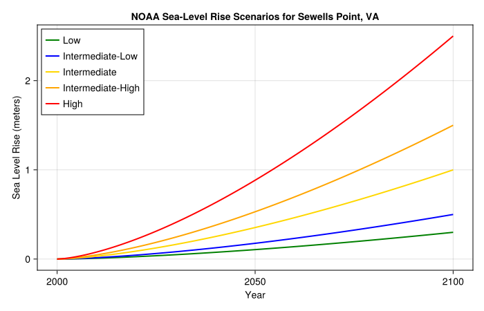
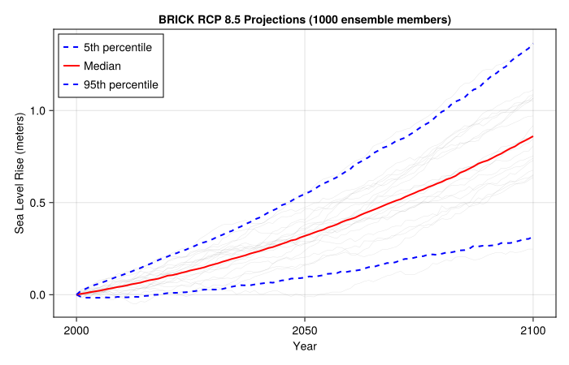
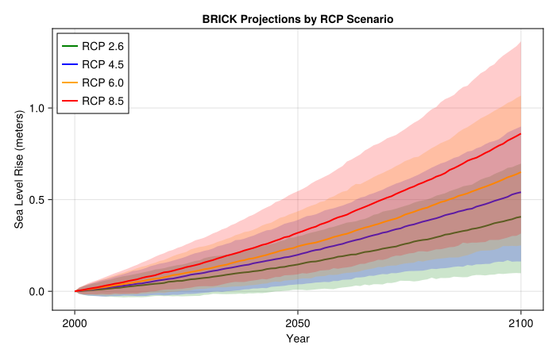
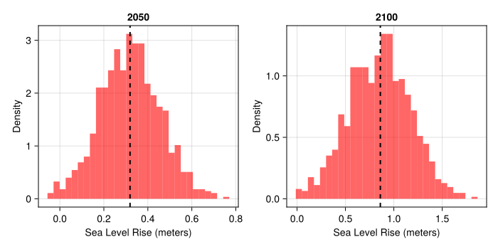
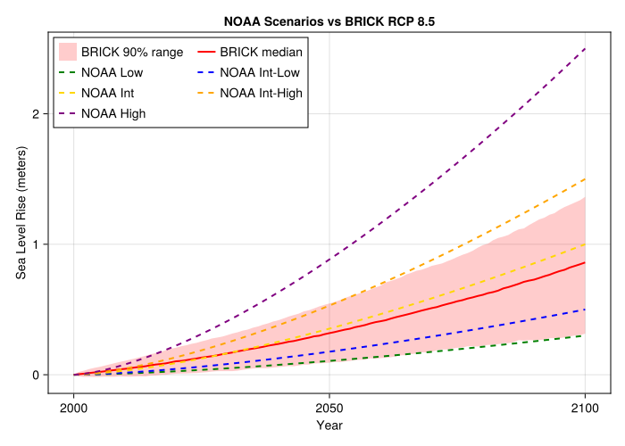

using Pkg
try
# Activate the local project
Pkg.activate(@__DIR__)
# Check if Manifest exists, if not instantiate
if !isfile(joinpath(@__DIR__, "Manifest.toml"))
Pkg.instantiate()
else
# Try to resolve any inconsistencies
Pkg.resolve()
end
catch e
@warn "Package environment setup failed, attempting recovery" exception=e
Pkg.activate(@__DIR__)
Pkg.instantiate()
endLab 3: Sea-Level Rise Scenarios and Uncertainty
CEVE 421/521
1 Overview
Sea-level rise projections vary widely depending on future emissions and our understanding of ice sheet dynamics. This lab explores two different approaches to characterizing this uncertainty:
- NOAA Scenarios: Deterministic scenarios spanning a range of plausible futures (Low to High)
- BRICK Model: Probabilistic projections with ensemble members representing parametric uncertainty
Learning Objectives:
- Work with NetCDF files using YAXArrays (indexing, slicing, computing statistics)
- Understand the difference between scenario-based and probabilistic projections
- Compare sea-level rise projections across different emissions pathways (RCPs)
- Interpret uncertainty ranges and how they grow with planning horizon
- Apply these skills to real climate projection data for decision-making
2 Before Lab
Complete these steps BEFORE coming to lab:
Accept the GitHub Classroom assignment (link on Canvas)
- This creates your personal copy of the lab repository
Clone your repository:
git clone https://github.com/CEVE-421-521/lab-03-S26-yourusername.git cd lab-03-S26-yourusernameInstall and precompile packages (this takes 5-10 minutes):
julia --project=. -e 'using Pkg; Pkg.instantiate()'This downloads all required packages and compiles them. Do this before lab so you’re ready to start working immediately.
Open the notebook:
- In VS Code: Open the folder, then open
index.qmd - Or use Quarto preview:
quarto preview index.qmd
- In VS Code: Open the folder, then open
Verify setup: Run the first code cell under “Package Setup” to ensure packages load without errors.
Troubleshooting:
- If
Pkg.instantiate()fails, check your internet connection - If packages won’t load, try restarting Julia
- If you get “package not found” errors, make sure you’re in the lab directory when running Julia
3 Setup
3.1 Why Sewells Point, Norfolk, VA?
Norfolk, Virginia is one of the most vulnerable cities to sea-level rise in the United States. Sewells Point is a tide gauge location at the world’s largest naval base (Naval Station Norfolk).
Why is Norfolk especially vulnerable?
- Land subsidence: The land is sinking due to groundwater extraction and post-glacial adjustment
- Low elevation: Much of the city is only a few feet above current sea level
- Military significance: Naval Station Norfolk is the world’s largest naval base
- Growing flood frequency: The city already experiences regular “sunny day flooding”
All sea-level rise projections in this lab are for Sewells Point, measured in meters above the year 2000 baseline.
3.2 Package Setup
using CairoMakie
using YAXArrays
using DimensionalData: dims
using NetCDF
using Statistics
include("sea_level_data.jl")- 1
- For creating figures
- 2
- For working with multidimensional labeled arrays
- 3
- For working with dimensions
- 4
- For reading NetCDF data files
- 5
- For computing quantiles and means
- 6
- Helper functions for convenient data access (we’ll build up to these)
4 Working with Climate Data
4.1 What is NetCDF?
NetCDF (Network Common Data Form) is the standard file format for climate and earth science data. It stores multidimensional arrays with labeled dimensions and metadata.
Think of NetCDF as a container that holds:
- Data arrays (e.g., sea level rise values)
- Dimensions (e.g., time, ensemble members, scenarios)
- Coordinates (e.g., specific years, RCP names)
- Metadata (e.g., units, descriptions, data sources)
4.2 Loading a NetCDF File
Let’s open our sea-level data file and explore its structure:
data_path = joinpath(@__DIR__, "data", "sea_level_projections.nc")
ds = open_dataset(data_path)YAXArray Dataset Shared Axes: (↓ time Sampled{Int64} 2000:1:2100 ForwardOrdered Regular Points) Variables with additional axes: Additional Axes: (↓ noaa_scenario Sampled{Int64} 1:5 ForwardOrdered Regular Points) Variables: noaa_slr Additional Axes: (↓ ensemble Sampled{Int64} 1:1:1000 ForwardOrdered Regular Points, → rcp Sampled{Int64} 1:4 ForwardOrdered Regular Points) Variables: brick_slr Properties: Dict{String, Any}("history" => "Generated by generate_sample_data.jl", "note" => "For instructional purposes only", "source" => "Synthetic data based on BRICK and NOAA patterns", "title" => "Sea Level Rise Projections for Sewells Point, VA", "institution" => "Rice University CEVE 421/521")
The dataset contains multiple variables. Let’s see what’s inside:
dsYAXArray Dataset Shared Axes: (↓ time Sampled{Int64} 2000:1:2100 ForwardOrdered Regular Points) Variables with additional axes: Additional Axes: (↓ noaa_scenario Sampled{Int64} 1:5 ForwardOrdered Regular Points) Variables: noaa_slr Additional Axes: (↓ ensemble Sampled{Int64} 1:1:1000 ForwardOrdered Regular Points, → rcp Sampled{Int64} 1:4 ForwardOrdered Regular Points) Variables: brick_slr Properties: Dict{String, Any}("history" => "Generated by generate_sample_data.jl", "note" => "For instructional purposes only", "source" => "Synthetic data based on BRICK and NOAA patterns", "title" => "Sea Level Rise Projections for Sewells Point, VA", "institution" => "Rice University CEVE 421/521")
You should see two main data variables:
brick_slr: BRICK model projections (3D: time × ensemble × RCP)noaa_slr: NOAA scenarios (2D: time × scenario)
4.3 Exploring Dimensions and Coordinates
Let’s examine the dimensions:
# What are the time points?
ds["time"][:]time 2000:1:2100
# How many ensemble members does BRICK have?
ds["ensemble"][:]ensemble 1:1:1000
4.4 Indexing and Slicing
YAXArrays lets us select data by dimension names. Let’s extract NOAA projections:
noaa_slr = ds["noaa_slr"]┌ 101×5 YAXArray{Float32, 2} NOAA sea level rise scenario ┐ ├─────────────────────────────────────────────────────────┴─── dims ┐ ↓ time Sampled{Int64} 2000:1:2100 ForwardOrdered Regular Points, → noaa_scenario Sampled{Int64} 1:5 ForwardOrdered Regular Points ├───────────────────────────────────────────────────────── metadata ┤ Dict{String, Any} with 7 entries: "units" => "meters" "name" => "noaa_slr" "location" => "Sewells Point, Norfolk, VA" "note" => "Synthetic data for instructional purposes" "long_name" => "NOAA sea level rise scenario" "source" => "Based on Sweet et al. 2017 patterns" "baseline" => "2000" ├──────────────────────────────────────────────────── loaded lazily ┤ data size: 1.97 KB └───────────────────────────────────────────────────────────────────┘
This is a 2D array with dimensions (time, scenario). Let’s look at its size and dimensions:
size(noaa_slr)(101, 5)dims(noaa_slr)(↓ time Sampled{Int64} 2000:1:2100 ForwardOrdered Regular Points, → noaa_scenario Sampled{Int64} 1:5 ForwardOrdered Regular Points)
Now let’s extract the “intermediate” scenario (index 3):
# Your code here4.5 Computing Statistics
Let’s work with the BRICK data, which has an ensemble dimension. First, extract the RCP 8.5 scenario (index 4):
brick_slr = ds["brick_slr"]
rcp85_slr = brick_slr[rcp=4] # 4th RCP is RCP 8.5┌ 101×1000 YAXArray{Float32, 2} BRICK local sea level rise projection ┐ ├─────────────────────────────────────────────────────────────── dims ┤ ↓ time Sampled{Int64} 2000:1:2100 ForwardOrdered Regular Points, → ensemble Sampled{Int64} 1:1:1000 ForwardOrdered Regular Points ├─────────────────────────────────────────────────────────── metadata ┤ Dict{String, Any} with 6 entries: "units" => "meters" "name" => "brick_slr" "location" => "Sewells Point, Norfolk, VA" "note" => "Synthetic data for instructional purposes" "long_name" => "BRICK local sea level rise projection" "baseline" => "2000" ├────────────────────────────────────────────────────── loaded lazily ┤ data size: 394.53 KB └─────────────────────────────────────────────────────────────────────┘
This gives us a 2D array (time × ensemble). Let’s compute the median across ensemble members for each year:
# Your code here# Your code here
# Your code here4.6 Quick Visualization
Now let’s visualize what we just computed. We’ll use the helper functions to make plotting easier:
let
# Load data using helper functions (easier than raw YAXArrays for plotting)
noaa_data = load_noaa_scenarios()
brick_data = load_brick_projections()
# Get specific scenarios
noaa_int = get_noaa_scenario(noaa_data, "intermediate")
brick_rcp85 = get_brick_scenario(brick_data, "rcp85")
quantiles = brick_quantiles(brick_rcp85, [0.50, 0.95])
fig = Figure(size=(700, 400))
ax = Axis(
fig[1, 1];
xlabel="Year",
ylabel="Sea Level Rise (meters)",
title="Sea-Level Rise: First Look"
)
# NOAA intermediate scenario
lines!(ax, noaa_data.years, noaa_int; label="NOAA Intermediate", color=:blue, linewidth=2)
# BRICK RCP 8.5 median and 95th percentile
lines!(ax, brick_data.years, quantiles[:, 1]; label="BRICK RCP 8.5 Median", color=:red, linewidth=2)
lines!(ax, brick_data.years, quantiles[:, 2]; label="BRICK RCP 8.5 (95th percentile)",
color=:red, linewidth=2, linestyle=:dash)
axislegend(ax; position=:lt)
fig
end
5 NOAA Sea-Level Rise Scenarios
NOAA provides deterministic scenarios that span a range of plausible futures. These are NOT probabilistic projections — they don’t have probabilities attached. Instead, they represent “what if” storylines.
Now that you’ve learned the basics of working with NetCDF and YAXArrays, let’s use some helper functions to make our analysis more convenient.
5.1 Loading the Data
noaa_data = load_noaa_scenarios()
println("NOAA Scenarios: $(noaa_data.scenarios)")
println("Years: $(noaa_data.years[1]) to $(noaa_data.years[end])")NOAA Scenarios: ["low", "int_low", "intermediate", "int_high", "high"]
Years: 2000 to 21005.2 Visualizing the Scenarios
let
fig = Figure(size=(700, 450))
ax = Axis(
fig[1, 1];
xlabel="Year",
ylabel="Sea Level Rise (meters)",
title="NOAA Sea-Level Rise Scenarios for Sewells Point, VA"
)
colors = [:green, :blue, :gold, :orange, :red]
labels = ["Low", "Intermediate-Low", "Intermediate", "Intermediate-High", "High"]
for (i, scenario) in enumerate(noaa_data.scenarios)
slr = get_noaa_scenario(noaa_data, scenario)
lines!(ax, noaa_data.years, slr; color=colors[i], linewidth=2, label=labels[i])
end
axislegend(ax; position=:lt)
fig
end
5.3 Interpreting the Scenarios
6 BRICK Model Projections
The BRICK model (Building blocks for Relevant Ice and Climate Knowledge) takes a different approach. For each emissions pathway (RCP), it generates an ensemble of projections representing parametric uncertainty.
6.1 Loading BRICK Data
brick_data = load_brick_projections()
println("RCP Scenarios: $(brick_data.rcps)")
println("Ensemble members: $(length(brick_data.ensemble))")
println("Years: $(brick_data.years[1]) to $(brick_data.years[end])")RCP Scenarios: ["rcp26", "rcp45", "rcp60", "rcp85"]
Ensemble members: 1000
Years: 2000 to 21006.2 Visualizing a Single RCP
Let’s look at RCP 8.5 (high emissions) first:
let
rcp85 = get_brick_scenario(brick_data, "rcp85")
quantiles = brick_quantiles(rcp85, [0.05, 0.50, 0.95])
fig = Figure(size=(700, 450))
ax = Axis(
fig[1, 1];
xlabel="Year",
ylabel="Sea Level Rise (meters)",
title="BRICK RCP 8.5 Projections ($(length(brick_data.ensemble)) ensemble members)"
)
# Plot a sample of ensemble members
for i in 1:50:length(brick_data.ensemble)
lines!(ax, brick_data.years, rcp85[:, i]; color=(:gray, 0.2), linewidth=0.5)
end
# Plot quantiles
lines!(ax, brick_data.years, quantiles[:, 1]; color=:blue, linewidth=2, linestyle=:dash, label="5th percentile")
lines!(ax, brick_data.years, quantiles[:, 2]; color=:red, linewidth=2, label="Median")
lines!(ax, brick_data.years, quantiles[:, 3]; color=:blue, linewidth=2, linestyle=:dash, label="95th percentile")
axislegend(ax; position=:lt)
fig
end
6.3 Comparing RCP Scenarios
Now let’s compare projections across all four RCP scenarios:
let
fig = Figure(size=(700, 450))
ax = Axis(
fig[1, 1];
xlabel="Year",
ylabel="Sea Level Rise (meters)",
title="BRICK Projections by RCP Scenario"
)
colors = Dict("rcp26" => :green, "rcp45" => :blue, "rcp60" => :orange, "rcp85" => :red)
labels = Dict("rcp26" => "RCP 2.6", "rcp45" => "RCP 4.5", "rcp60" => "RCP 6.0", "rcp85" => "RCP 8.5")
for rcp in brick_data.rcps
scenario_data = get_brick_scenario(brick_data, rcp)
quantiles = brick_quantiles(scenario_data, [0.05, 0.50, 0.95])
# Shaded uncertainty range
band!(ax, brick_data.years, quantiles[:, 1], quantiles[:, 3];
color=(colors[rcp], 0.2))
# Median line
lines!(ax, brick_data.years, quantiles[:, 2];
color=colors[rcp], linewidth=2, label=labels[rcp])
end
axislegend(ax; position=:lt)
fig
end
6.4 Understanding the Spread
Let’s look at the distribution of projections at 2050 and 2100 for RCP 8.5:
let
slr_2050 = slr_at_year(brick_data, "rcp85", 2050)
slr_2100 = slr_at_year(brick_data, "rcp85", 2100)
fig = Figure(size=(700, 350))
ax1 = Axis(fig[1, 1]; xlabel="Sea Level Rise (meters)", ylabel="Density", title="2050")
hist!(ax1, slr_2050; bins=30, normalization=:pdf, color=(:red, 0.6))
vlines!(ax1, [median(slr_2050)]; color=:black, linewidth=2, linestyle=:dash, label="Median")
ax2 = Axis(fig[1, 2]; xlabel="Sea Level Rise (meters)", ylabel="Density", title="2100")
hist!(ax2, slr_2100; bins=30, normalization=:pdf, color=(:red, 0.6))
vlines!(ax2, [median(slr_2100)]; color=:black, linewidth=2, linestyle=:dash)
fig
end
7 Comparing Approaches
Now let’s overlay the NOAA scenarios and BRICK projections to see how they compare:
let
rcp85 = get_brick_scenario(brick_data, "rcp85")
quantiles = brick_quantiles(rcp85, [0.05, 0.50, 0.95])
fig = Figure(size=(700, 500))
ax = Axis(
fig[1, 1];
xlabel="Year",
ylabel="Sea Level Rise (meters)",
title="NOAA Scenarios vs BRICK RCP 8.5"
)
# BRICK uncertainty range
band!(ax, brick_data.years, quantiles[:, 1], quantiles[:, 3];
color=(:red, 0.2), label="BRICK 90% range")
lines!(ax, brick_data.years, quantiles[:, 2];
color=:red, linewidth=2, label="BRICK median")
# NOAA scenarios
noaa_colors = [:green, :blue, :gold, :orange, :purple]
noaa_labels = ["NOAA Low", "NOAA Int-Low", "NOAA Int", "NOAA Int-High", "NOAA High"]
for (i, scenario) in enumerate(noaa_data.scenarios)
slr = get_noaa_scenario(noaa_data, scenario)
lines!(ax, noaa_data.years, slr;
color=noaa_colors[i], linewidth=2, linestyle=:dash, label=noaa_labels[i])
end
axislegend(ax; position=:lt, nbanks=2)
fig
end
7.1 Key Observations
8 Reflection
8.1 Connecting to Lecture Concepts
Think back to this week’s lectures on climate scenarios and projections.
8.2 Planning Horizons
8.3 Synthesis
9 Summary
In this lab, you learned to:
- Work with NetCDF files using YAXArrays (indexing, slicing, computing statistics across dimensions)
- Distinguish between scenario-based (NOAA) and probabilistic (BRICK) approaches to projections
- Compare projections across emissions pathways (RCPs)
- Interpret uncertainty ranges and how they grow with planning horizon
- Apply these data skills to real climate projection data for decision-making
The key insight: Uncertainty is not a reason to delay action. Both scenarios and probabilistic projections are tools for making better decisions under uncertainty.
10 Submission
- Push your completed notebook to GitHub
- If the formatter creates a pull request, approve it and re-render
- Submit the link to your repository on Canvas
Checklist
Before submitting, verify you have completed: